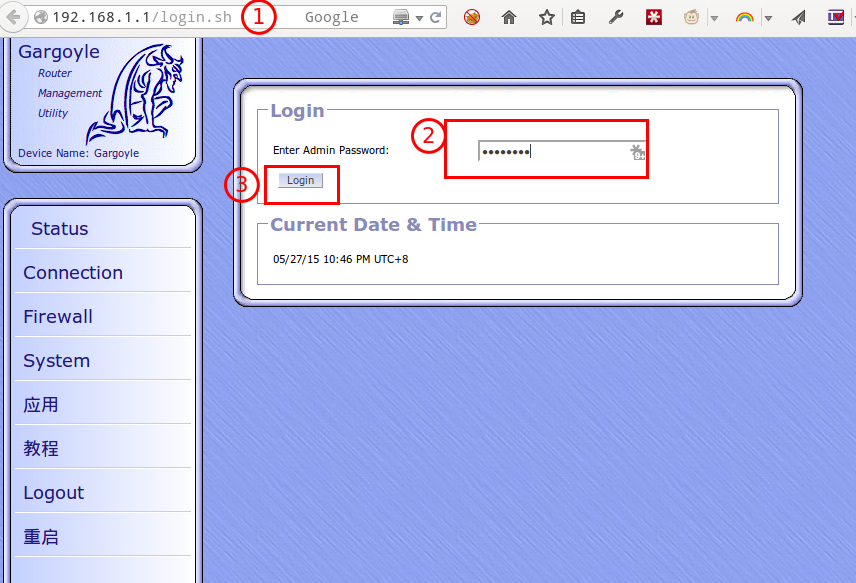
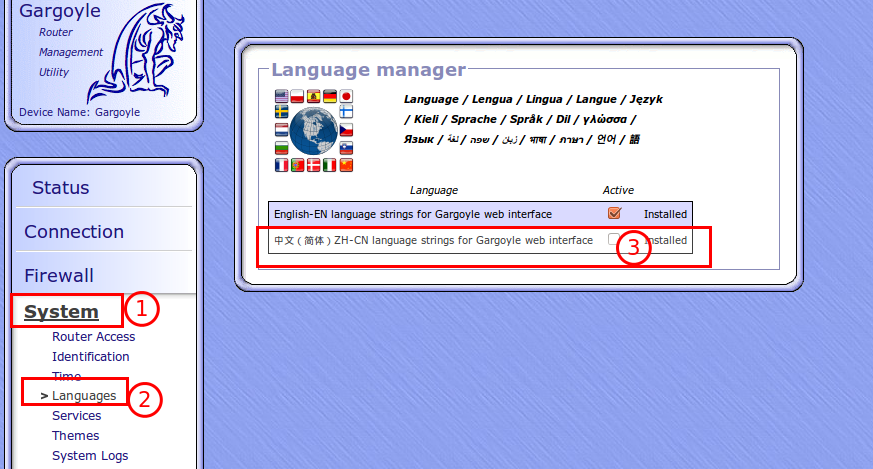
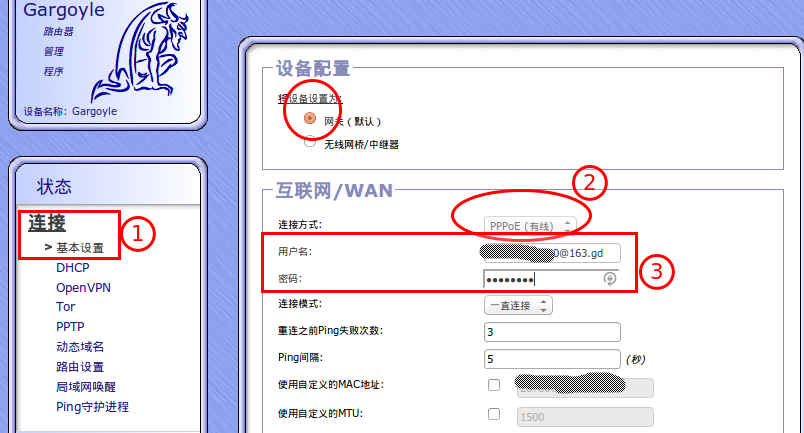
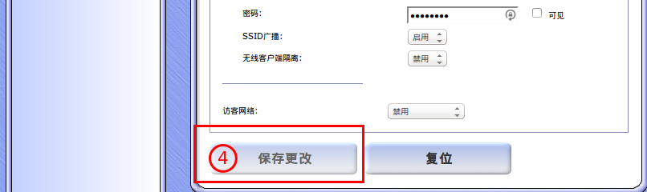
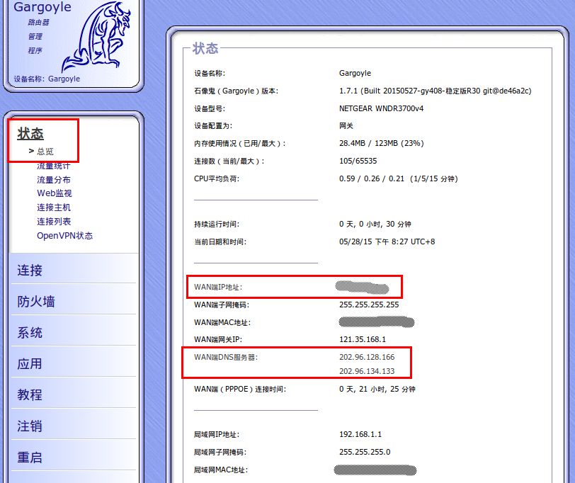
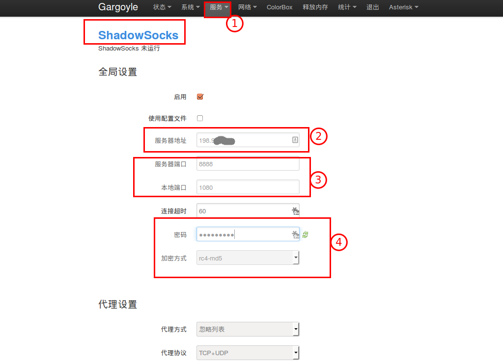
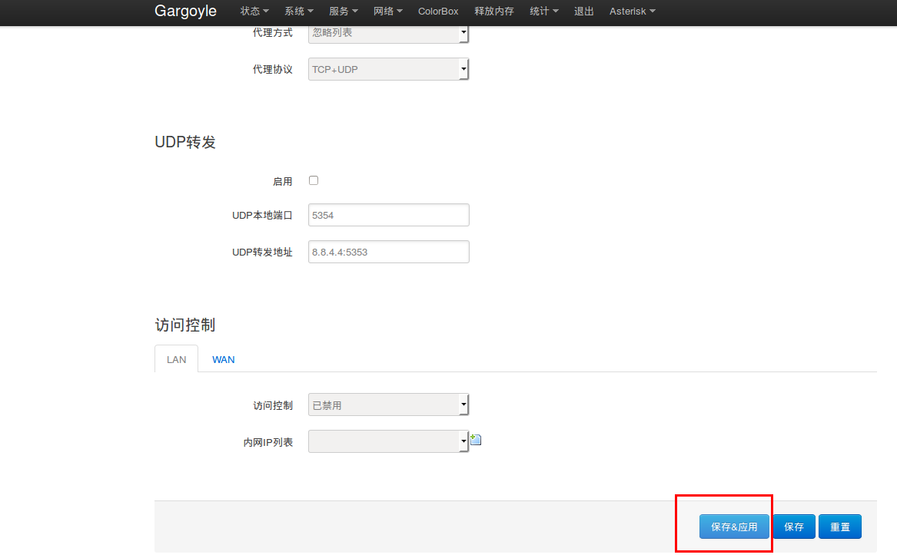
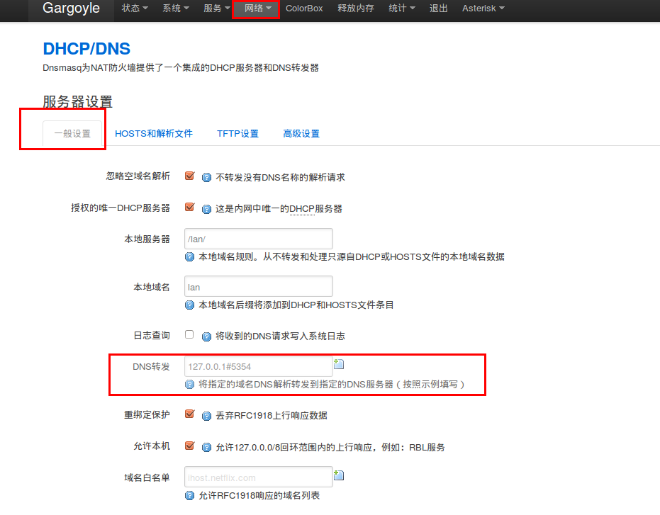
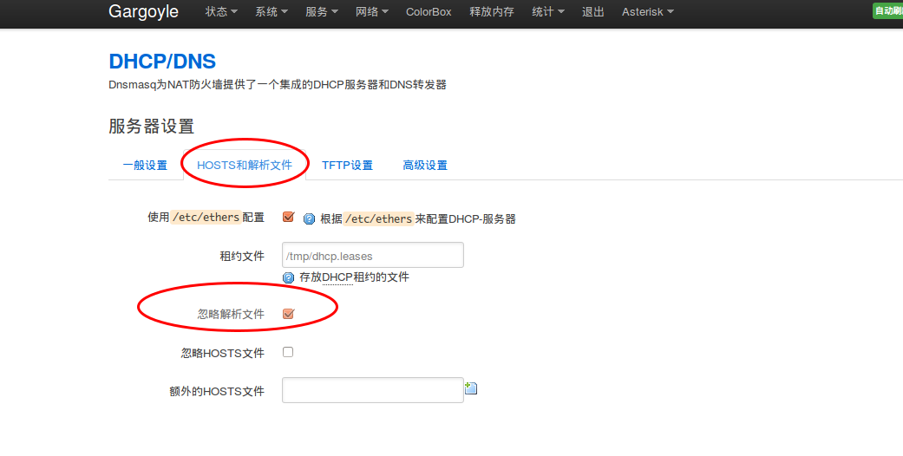
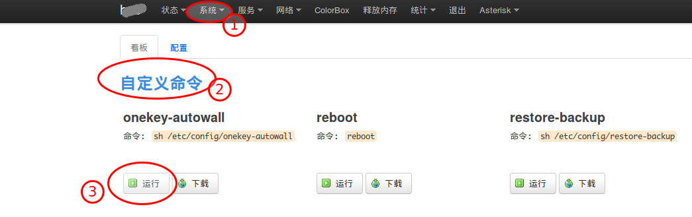

石像鬼gargoyle固件 R30 使用教程
1 说明
1.1 后台默认帐号和密码
默认管理员帐号： root
默认root密码： password
1.2 ssh默认帐号和密码
默认管理员帐号： root
默认root密码： password
1.3 gargoyle后台GUI
1.4 LUCI后台面板
1.5 默认地址
石像鬼的gui进入方式 http://192.168.1.1luci面板的进入方式为 http://192.168.1.1:8080transmission地址 http://192.168.1.1:9091/transmission/web/aria地址 http://192.168.1.1/yaaw/ 或者 http://192.168.1.1/webui-aria2/电驴http://192.168.1.1:4711- 路由器上的网站 http://192.168.1.1:81
数据库管理http://192.168.1.1:81/phpmyadminWebdavhttp://192.168.1.1:888/webdav/
2 主要特性
- 拥有石像鬼和openwrt全部特性
- 石像鬼gui和luci双界面
13信道- 石像鬼全插件全主题
- web认证
- 广告屏蔽
迅雷- 打印服务器
- 翻WALL（
ss+chinadns+pdnsd+redstock2） - viop电话
百度云最新版- IPTV电视
- 网络共享，
- openvpn
- aria2全功能版本
- 优酷路由宝
- 摄像头监控
- Transmission（最新增强版）
- MiniDLNA
- UPnP重定向
- 硬盘休眠
- 手机控制ColorBox
- sqm-qos
- 多拨（
mwan3,nwan，Macvlan等） - 数据统计
- 流量监控(
可以监控用户浏览的URL，查询的关键词) - MMC/SD界面
- kms 激活服务器
3 刷机
3.1 windows下面刷机方法
- 将PC用网线连接到设备的 LAN口，将PC的IP设置为
192.168.1.X（此例中IP地址设置为192.168.1.2），子网掩码为255.255.255.0，其他项目可不必设置。 - 按路由器开关，将路由器断电；
- 用
牙签，或其他尖物按住设备背面的 Restore Factory Settings 按钮（机身背面的红色小圆孔） - 开启设备电源开关；
- 观察电源灯（此时保持按住Restore Factory Settings按钮不要松手），直到电源灯由
橙色闪烁状态变到绿色闪烁状态（说明设备已经进入到了 TFTP修复模式 ）； - win下dos命令
tftp -i 192.168.1.1 put openwrt-ar71xx-nand-wndr3700v4-ubi-factory.img - 文件传送完毕后，等待80秒左右，设备会自动重启（请耐心等待，切勿将路由器手动断电）。至此，TFTP修复完成。
- 设备重启后，看到亮绿灯，一定先手动断电一次，再重启。
否则可能没有5G这不是BUG，其他openwrt也是一样的。 - 如果恢复过程中断或失败，重复上述步骤再做尝试。
注：如果恢复过程中断或失败，重复上述步骤再做尝试。
3.2 linux下面刷机方法
同样，按以上方法进入TFTP修复模式，然后按下面步骤
- 输入“tftp”，出现“tftp>”提示符；
- 输入“verbose”，出现“Verbose mode on.”提示；
- 输入“binary”，出现“mode set to octet.”提示；
- 输入“trace”，出现“Packet tracing on.”提示；
- 输入“rexmt 1”，每格一秒尝试一次推送；
- 输入“timeout 60”，推送尝试的时间不超过60秒；
- 输入“connect 192.168.1.1”，连接路由器（实际上并没连接，只是为连接作好准备）；
- 输入“put openwrt-ar71xx-nand-wndr3700v4-ubi-factory.img”；
以上命令，可以用下面一句命令代替
echo -e "binary\nrexmt 1\ntimeout 60\ntrace\nput openwrt-ar71xx-nand-wndr3700v4-ubi-factory.img\n" | tftp 192.168.1.1
4 初次使用本固件
- 登陆路由器，访问 http://192.168.1.1
输入root的登陆密码 password

- 设置路由器的语言

- 设置上网
设置路由器的语言后，第一时间应先配置WAN。


- 按照以上步骤设置，并点击
保存更改，正常情况下，保存后可拨号成功。
拨号成功后，可以在 状态 页面，发现 WAN端IP地址 已成功获取到。可以使用浏览器，测试是否可以上网。
特殊的情况下，仍旧不能上网，可再次确认是否真正已保存成功拨号信息，也可重启多测试一次

5 翻墙
注意，设置翻墙前，先确认上网没有问题，下面是详细的翻墙设置方法
- 访问LUCI后台 http://192.168.1.1:8080
默认登陆用户： root
默认登陆密码： password


- 设置DHCP/DNS


- 进入LUCI面板，=系统= —
自定义命令-—运行
